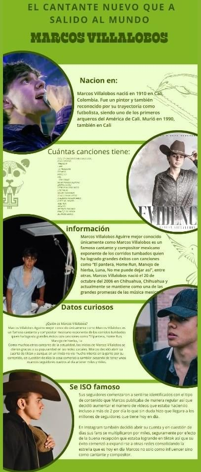

canva
CANVA ES
Es una herramienta de creatididad y publicacion online que tiene como mision poner el poder de la creatividad al alcance de todo el mundo tambien es una plataforma en linea
de un grafico que permite crear, editar y compartir lo que ayas creado visualmente de diversos tipos, como presentaciones, publicaciones en redes sociales, videos, carteles y mucho mas. Sirve para que cualquier persona, sin importar su experiencia en la plataforma,
pueda crear contenido visual profesional de forma rapida y sencilla
PARA QUE SIRVE
es una herramienta online que permite a cualquier persona, sin necesidad de conocimientos previos, crear presentaciones visuales atractivos. Es util para crear contenido para redes sociales, presentaciones, posters, invitaciones, logos, y mucho mas, a traves de una interfaz intuitiva y una amplia biblioteca de plantillas y recursos. Tambien
ofrece funciones adicionales como edicion de fotos, conversion de archivos, y herramientas.
COMO SE UTILIZA
Paso a paso
1.Crea tu cuenta El primer paso es crear una cuenta en Canva gratis
2.Explora la biblioteca para conocer las plantillas
3.Elige la plantilla que mas te guste para tus publicaciones
4.La imagen y el texto
5.Comparte o descarga la imagen

QUIEN CREO CANVA
Canva fue fundada por Melanie Perkins, Cliff Obrecht y Cameron Adams

COMO AYUDA ALA COMUNIDAD DIGITAL
Canva, como herramienta en linea, contribuye significativamente
a la comunidad digital al facilitar la creacion de contenido visual para una amplia gama de propositos, incluyendo redes sociales, educacion, marketing y mas.
Facilita la creacion de contenido visual
Empodera a personas sin experiencia en la creatividad
Promueve la colaboracion
Apoya la educacion
Potencia el marketing y la comunicacion
Impulsa la creatividad e innovacion
QUE DIFERENCIA HAY ENTRE CANVA,MENTIMETER,GEANIALLY
Canva, Mentimeter y Genially son herramientas digitales que se utilizan para la creacion de contenidos, pero con enfoques distinto
Canva:crear graficos generales.
Mentimeter: Presentaciones interactivas para audiencia.
Genially interactivo y dinamico para diversos contenidos.
REGRESO:)